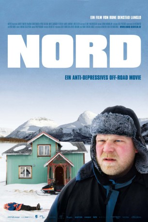

#9193 Nord
 
 IMDB-Wertung: 6.7 / 10
IMDB-Wertung: 6.7 / 10  Metascore: 0
Metascore: 0 
Jomar ist ein ehemaliger Ski-Profi, der zurückgezogen als Liftwärter eines Ski-Parks arbeitet. Eines Tages erfährt er, dass im Norden sein vermeintliches Kind leben soll. Also macht sich Jomar, mit fünf Litern Alkohol bewaffnet, auf seinem Schneemobil auf den Weg Richtung Polarkreis. Auf seiner Reise trifft er weitere interessante Menschen und es stellt sich schließlich die Frage: Will Jomar sein Ziel überhaupt erreichen?
Jahr: 2009
Dauer: 75 Minuten
FSK:
Land: Norwegen Studio: Alamode FilmTonspuren:
Untertitel:
Auflösung: 1080p (1920x816) Größe: 2631 MB
Genre: Drama, Komödie
Regisseur: Rune Denstad Langlo
Drehbuch: Erlend Loe
Soundtrack: Ola Kvernberg
Darsteller:
 Anders Baasmo Christiansen als Jomar Henriksen
Anders Baasmo Christiansen als Jomar Henriksen- Mads Sjøgård Pettersen als Ulrik
 Kyrre Hellum als Lasse
Kyrre Hellum als Lasse- Marte Aunemo als Lotte
- Lars Olsen als Ailo
- Astrid Solhaug als Mari
- Even Vesterhus als Thomas
- Ragnhild Vannebo als Rigmor
- Celine Engebrigtsen als Overlege Kran
- Ole Dalen als Sir Trøndelag
- Assad Arif als Soldat 1
- Emir Mulaosmanovic als Soldat 2
- Maria Bahramfarsi als Jente i heisbu
- Ylva Øyen Brandtsegg als Jente 2
- Einar Rubbås als Hei No
- Alexander Alsop als Jomar jr.
- Robert Sneeggen als Vakt
- Petter Rasmus als Radiostemme
- Tore Denstad Langlo als Pasient
- Stig Johansen als Pasient
- Christopher Gotaas als Pasient
- Tommy Almenning als Pasient
- Ole Gjævran als Pasient
Datei: X:\2009(N-Z)\Nord (2009, FSK, 1920x816).mkv seit 19.07.2018
Festplatte: HD 2009(G-Z)-2010(A-F)
 Es gibt insgesamt 99 Filme in der Gruppe '2009(N-Z)'
Es gibt insgesamt 99 Filme in der Gruppe '2009(N-Z)'